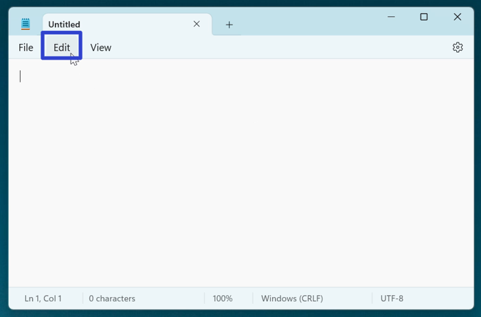
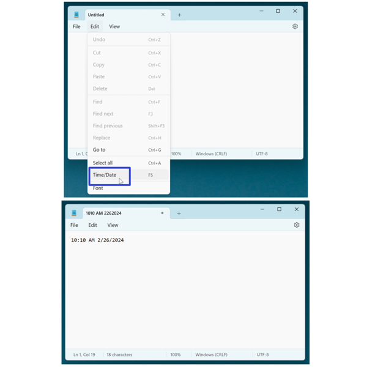
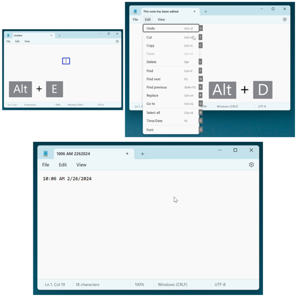
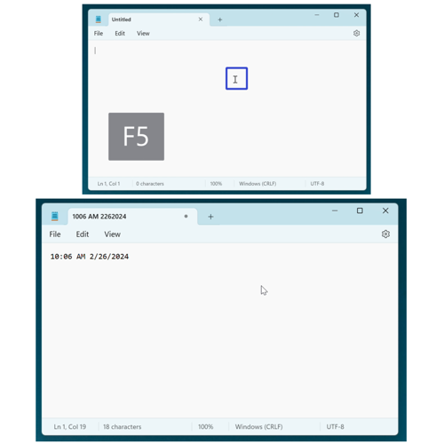
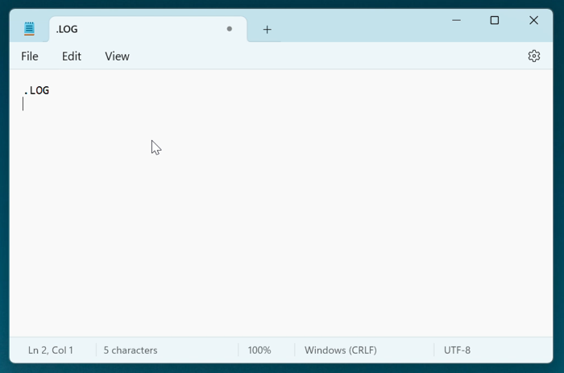
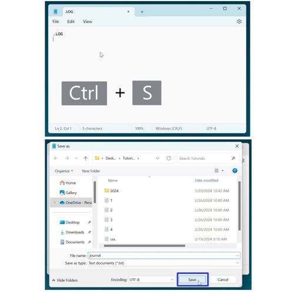
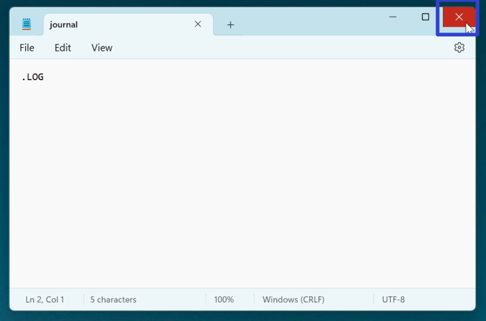
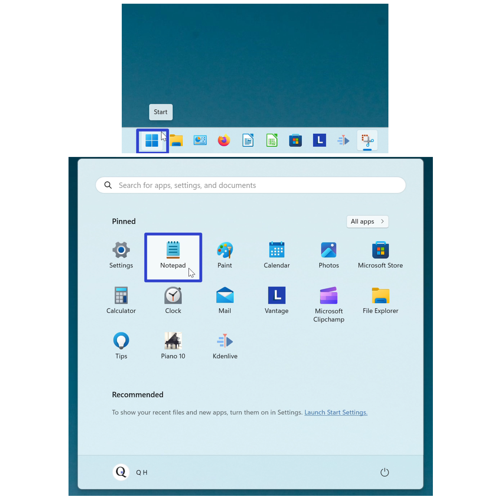
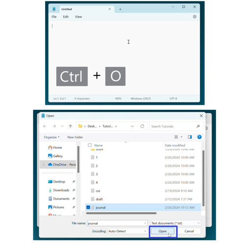
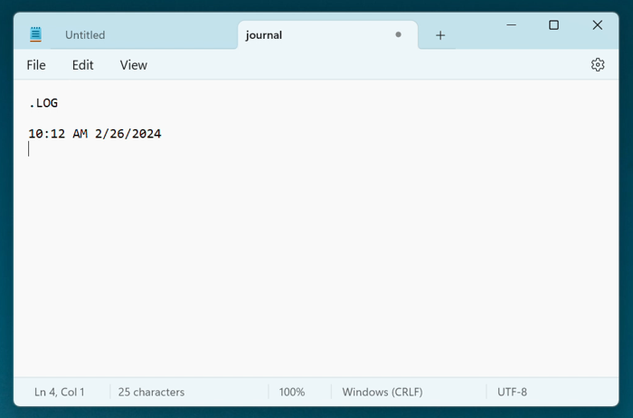

How to Create a Log in the Microsoft Notepad App (Windows 11)
This tutorial covers:
How to Create a Log in Notepad:
No time to scroll down? Click through this presentation tutorial:
Watch a tutorial video:
How to Create a Log in Notepad With Menu
- Step 1: First open a Notepad window. In the upper left click the “Edit” button. 
- Step 2: In the menu that opens, click “Time/Date”. Notepad inserts the current time and date into the document. 
How to Create a Log in Notepad With Keyboard
- Method 1: Open a Notepad window. On the keyboard press Alt + E + Alt + D. Notepad inserts the current time and date into the document. 
- Method 2: First open a Notepad window. On the keyboard press F5 or Fn + F5. Notepad inserts the current time and date into the document. 
How to Create a Log in Notepad With Code
- Step 1: Open a Notepad window. Click inside the window, type “.LOG”, and press Enter. 
- Step 2: Press Ctrl + S. In the “Save as” window that opens, type any text to name the file and click the “Save” button. 
- Step 3: Click the “Close” or “X” button in the upper right of the Notepad window. 
- Step 4: Reopen Notepad. For example, go down to the taskbar and click the Start (four blue squares) button, then click the pinned Notepad app icon. 
- Step 5: In the Notepad window that opens, press Ctrl + O, then select the file you saved in step 2 and click “Open”. 
- Whenever this file is opened, Notepad adds the current time and date to the document. 
Refer to these instructions later with this free PDF tutorial.